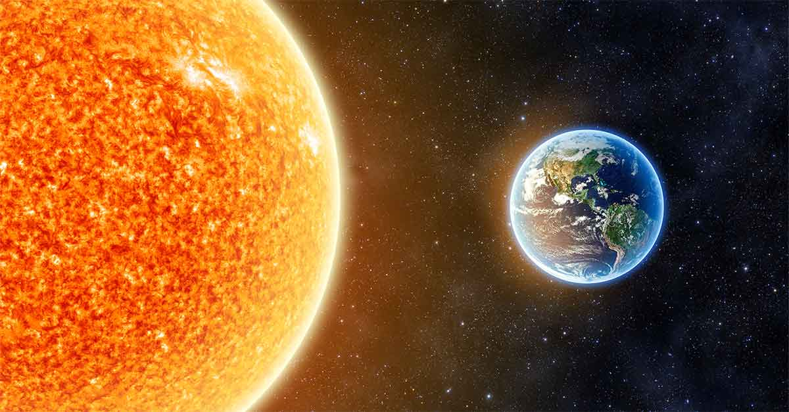

A simple vista, 150 millones de kilómetros suenan como una distancia insondable. Es el abismo que separa a la Tierra del Sol, nuestro incansable proveedor de luz y calor. Pero en el vasto esquema del universo, es apenas un guiño: un trayecto que la luz, moviéndose a su vertiginosa velocidad de 300,000 kilómetros por segundo, puede recorrer en solo 8 minutos y 20 segundos.
¿Alguna vez has mirado al Sol y pensado que no estás viendo el presente, sino el pasado? Esa esfera brillante que cuelga en el cielo no es como es ahora mismo. Lo que vemos es una versión de hace 8 minutos y medio. Es como si estuviéramos atrapados en un desfase de tiempo, una ilusión perpetua creada por la inmensidad del espacio y la rapidez—pero no instantaneidad—de la luz.
Ahora, hagamos un ejercicio mental: imagina que, en este preciso instante, el Sol colapsara en una explosión cataclísmica. La fuente de toda la vida en la Tierra se extinguiría en un acto de violencia cósmica. Pero... nosotros no lo sabríamos. Durante esos mismos 8 minutos y medio, todo en nuestro planeta seguiría igual. El cielo seguiría iluminado, los rayos del Sol calentarían nuestros rostros, y la vida continuaría sin sospechar nada.
Cuando la última luz del Sol finalmente llegara a nosotros, traeríamos con ella el aviso final: oscuridad eterna, temperaturas gélidas, y un cambio dramático en la vida como la conocemos. El Sol, pese a ser el centro de nuestro sistema, está tan lejos que incluso en su muerte, su último aliento nos engañaría con una falsa sensación de normalidad.
Este intervalo, este pequeño lapso de tiempo en términos cósmicos, es una oportunidad para reflexionar. Nos muestra que el universo opera en una escala de tiempo y espacio que desafía nuestra comprensión cotidiana. También nos recuerda lo interconectado que está todo, a pesar de las vastas distancias que nos separan de las estrellas que nos dan vida.
Así que sí, 150 millones de kilómetros es poco tiempo, cuando lo piensas a la velocidad de la luz. Pero, al mismo tiempo, es suficiente para recordarnos que, en este rincón del cosmos, vivimos en un delicado equilibrio. Un equilibrio donde incluso 8 minutos de luz pueden definir el destino de todo lo que conocemos.
